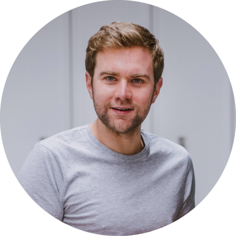
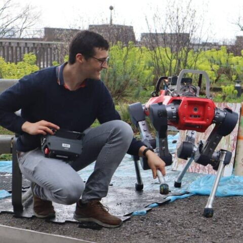
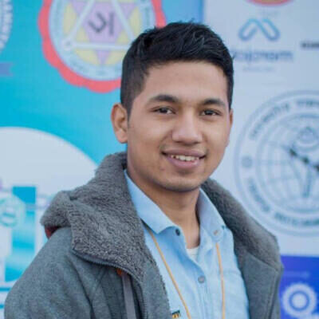
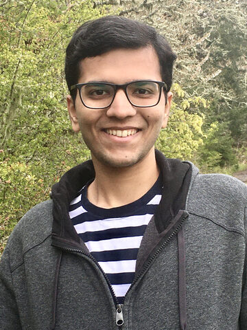
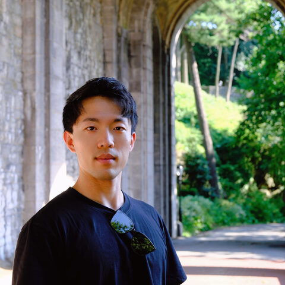
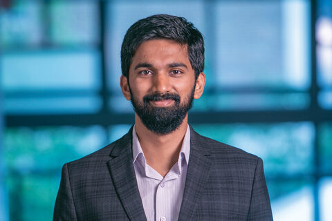
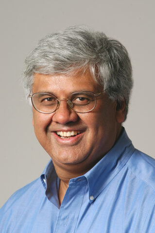
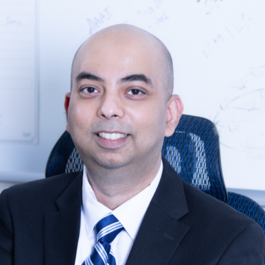

Sim-to-Real-to-Field: The Science of Transfer
From simulation, to the lab, to robust deployment in the field.
Robot learning has made remarkable progress at crossing the reality gap: we train in simulation, where data is cheap, exploration is safe, and scale is attainable, then transfer to physical hardware. But “real” usually means a single robot in a controlled lab, and the transfer is not finished there. A lab demonstration certifies a point; deployment in the field demands robustness measured distributionally — across many robots, sites, and operating conditions, where rare failure modes rather than average performance decide success.
We call this fuller arc sim-to-real-to-field (SRF). Robot learning is our center of gravity; we draw selectively on adjacent sim-to-real fields — scientific machine learning, control, and systems — for methods and evaluation standards the robotics community can borrow and lend.
We host an open call for contributed papers, inviting submissions that foster discussion and exploration of emerging ideas in sim-to-real transfer. We particularly encourage early-stage research, novel problem formulations, negative results, lessons learned from practical deployments, and system-building experiences. Selected submissions are featured as interactive poster sessions to maximize discussion.
Before you submit
Submissions are short and non-archival. We discourage papers already accepted to the main CoRL 2026 conference. Reviewing follows standard CoRL guidelines. Deadlines will be posted here.
A half-day, in-person workshop built around exchange — less than 25% of the program is talks. Schedule is tentative and subject to change.
| 0:00 | Opening: framing the three questions + polling |
| 0:10 | Invited talks — Amy Zhang (UT Austin) & Zhongyu Li (CUHK) |
| 0:55 | Invited talks — Claire Tomlin (UC Berkeley) & Michael Lutter (Boston Dynamics) |
| 1:25 | Poster session & coffee; cross-domain matchmaking; mentoring corner |
| 2:05 | Breakouts on Q1–Q3 (mixed-domain) → report-back |
| 2:50 | Fishbowl panel: what predicts transfer — scale, metrics, or structure? |
| 3:35 | Closing & community next steps |
Four invited speakers spanning career stages, academia and industry, and regions. Each addresses elements of Q1–Q3 and how the field should move forward.








Contact: rosario@cs.washington.edu